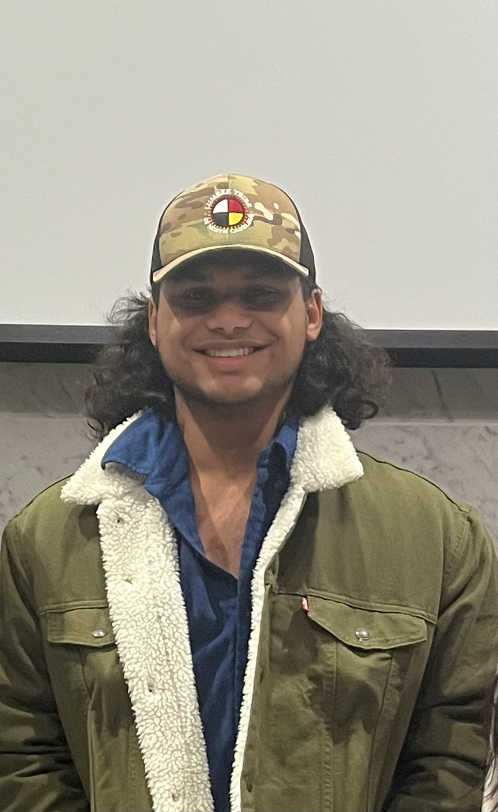

- Built a residual 1D CNN that removes jitter and spike noise from motion-capture trajectories, cutting error 16% and velocity error 22% versus the best tuned classical filter.
- Designed a leak-free train/validation/test pipeline and a 31-test pytest suite; the model's lead grows to 42% under 3× unseen noise.
Hunter Bryant

Computer Science Student
Pembroke, North Carolinahrb021@bravemail.uncp.eduLinkedinPortfolio
Summary
Computer Science student at the University of North Carolina at Pembroke seeking a software development internship. I build full-stack web apps, REST APIs and machine-learning projects in Python and JavaScript, with automated tests and CI on every project.
Projects
- Deployed a full-stack task board with drag and drop, search and filters, labels, team assignment, comments and an activity log.
- Used Supabase anonymous auth so visitors can try the app instantly without creating an account.
- Built a REST API with full CRUD, filtering by category and date range, sorting, pagination and Pydantic validation.
- Wrote pytest integration tests against an isolated in-memory database, run automatically with GitHub Actions.
- Wrote a command-line tool that sorts folders by file type with collision-safe renaming, a dry-run mode and an audit log.
Experience
Barista · Starbucks
Dillon, South Carolina
- Became a barista trainer to onboard and mentor new employees through 6-week training modules.
Team Member · Dunkin
Laurinburg, North Carolina
Night Manager · Planet Fitness
Lumberton, North Carolina
- Solo-managed 12-hour overnight facility operations, handling member inquiries, account issues, and facility security.
- Maintained facility cleanliness, equipment sanitation, and detailed daily operational logs.
Intramural Referee · UNC Pembroke
Pembroke, North Carolina
- Refereed intramural games in fast-paced environments, making real-time calls and coordinating with officiating crews to ensure fair play and participant safety.
Education
B.S. Computer Science
University of North Carolina at Pembroke · Pembroke, North Carolina
Skills
Languages: Python, Java, JavaScript, C++, SQL, HTML/CSS
Frameworks & tools: FastAPI, React, PyTorch, NumPy, SQLModel, Supabase, pytest, Git, GitHub Actions